大阪府
Osaka Prefecture
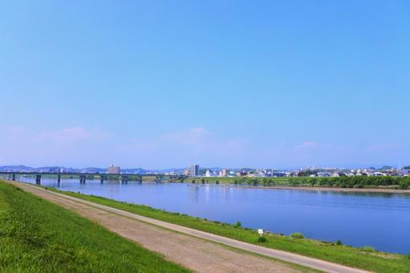
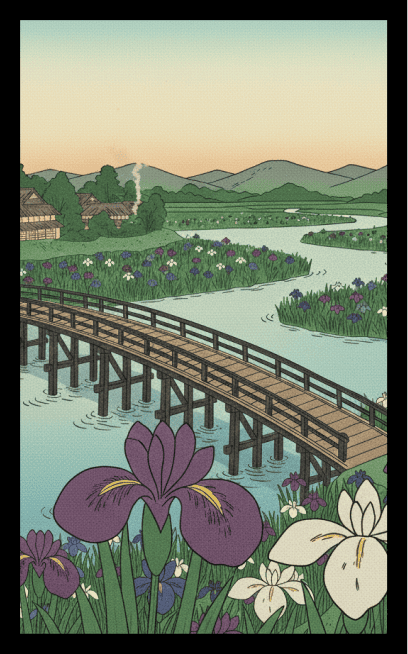
淀川の菖蒲に八橋
風景：大阪の母なる川・淀川の豊かな水辺に咲く菖蒲と、そこに架かる八橋（やつはし）。
解説：伝統的な「菖蒲に八橋」を、水都大阪の象徴である淀川で再現。かつて三十石船が行き交った水の路の歴史と、初夏の爽やかな風を表現します。
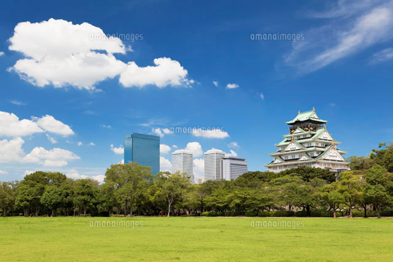
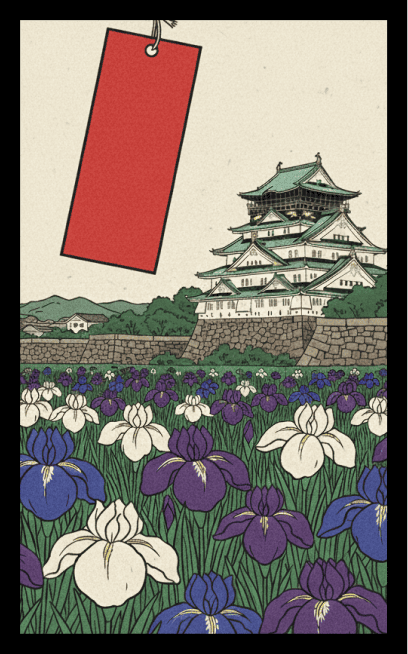
大阪城公園の菖蒲に短冊
風景：大阪城の内濠（うちぼり）近く、都会のオアシスに咲き誇る菖蒲。
解説：威風堂々とした天守閣を背景に、紫の菖蒲と短冊を配置。大阪を代表するランドマークと季節の調和を描きます。
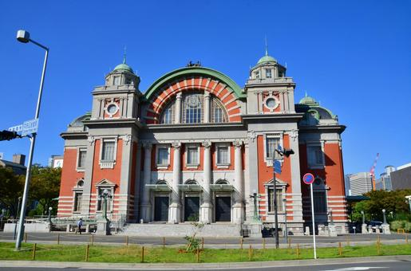
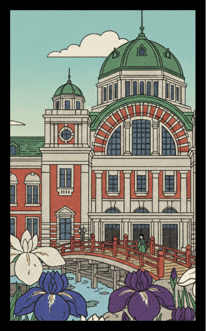
中之島の水辺の彩り
風景：近代建築が並ぶ中之島エリアの水辺に咲く菖蒲。
解説：レトロな公会堂や高層ビルを借景にした、現代の大阪らしいスタイリッシュな水辺の風景です。
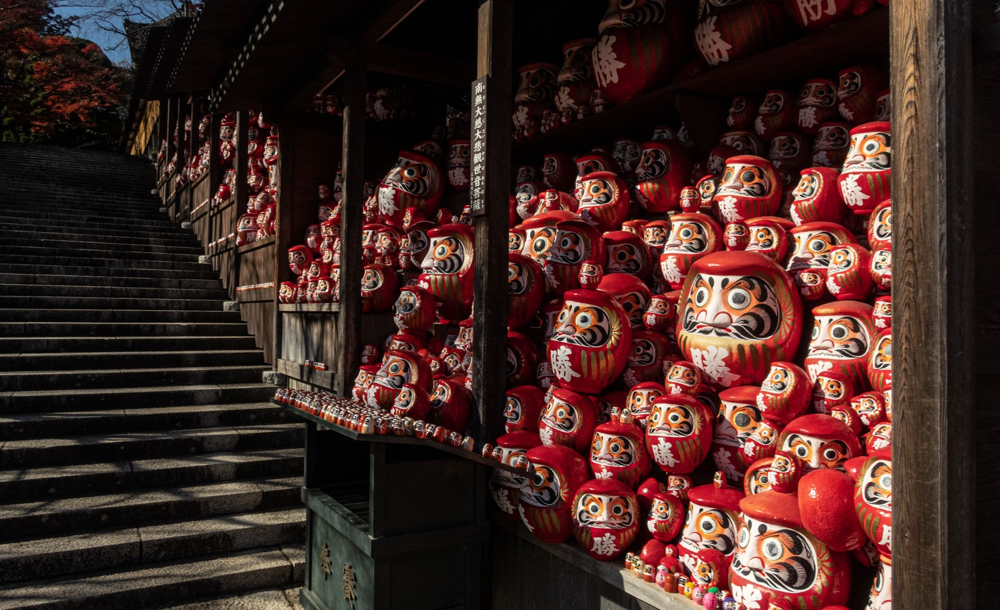
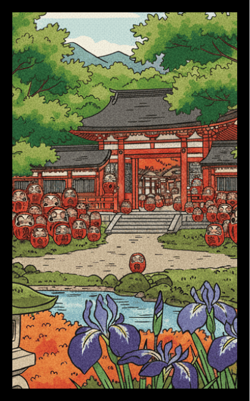
菖蒲（勝負）にこだわる勝運の寺
風景：箕面の勝尾寺（かつおうじ）など、勝負運にご利益のある寺社に咲く菖蒲。
解説：菖蒲を「勝負」とかけて、縁起を担ぐ大阪の商人文化や勝負事への熱意をユーモラスに表現します。
5月
絵札を押すと
詳細が見れるぞ
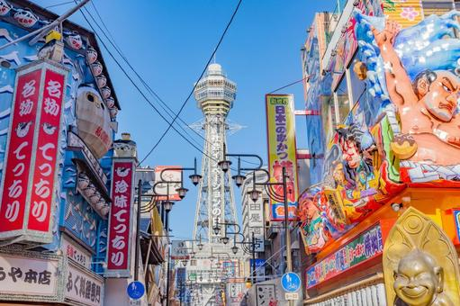
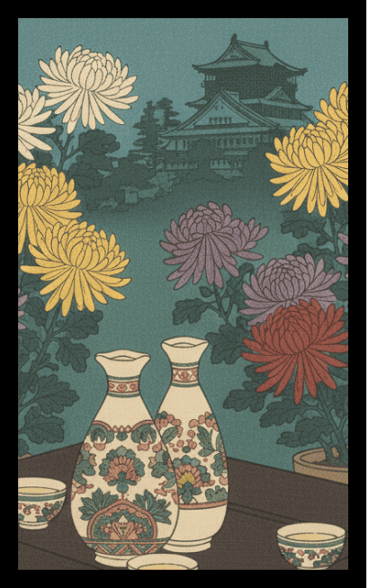
大阪の菊に盃（天下の台所で一杯）
風景：豪華に咲き誇る菊の傍らに、なみなみと注がれた盃。
解説：伝統的な「菊に盃」を、「天下の台所」大阪の食文化と融合。美味しい酒と肴が集まる大阪で、秋の収穫と菊酒を楽しむ陽気な宴の様子を表現しています。
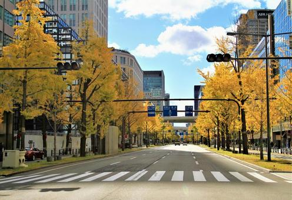
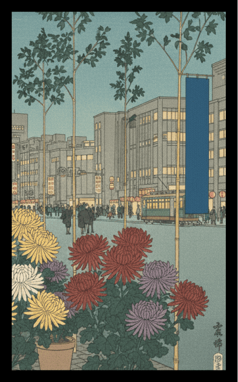
御堂筋の菊に青短
風景：大阪のメインストリート・御堂筋を彩る菊の展示と青短。
解説：洗練されたビジネス街でありながら、季節ごとに花で飾られる御堂筋。都会的な風景の中に、キリッとした「青短」が映える、現代の大阪らしい一枚です。
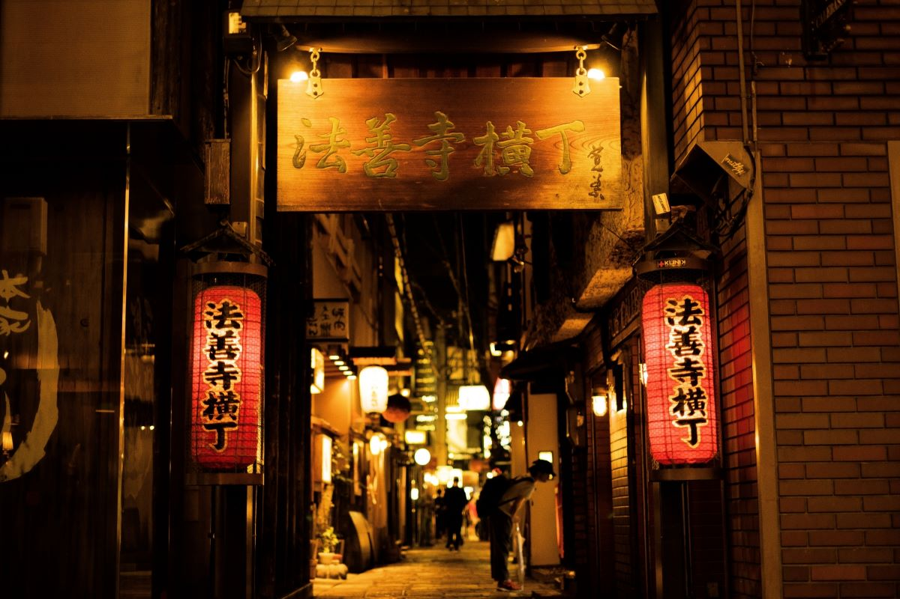
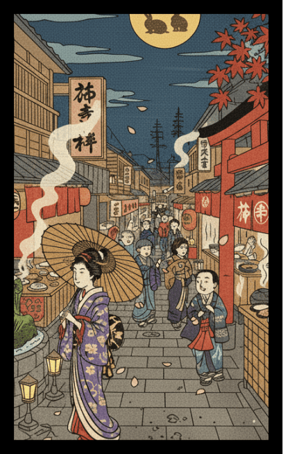
法善寺横丁の賑わい
風景：石畳の路地に、店先の提灯や菊の鉢植えが並ぶ様子。
解説：「水掛不動さん」で親しまれる浪花情緒の聖地。狭い路地に人々の活気が溢れ、しっとりと濡れた石畳が秋の菊を引き立てる情景を描写します。
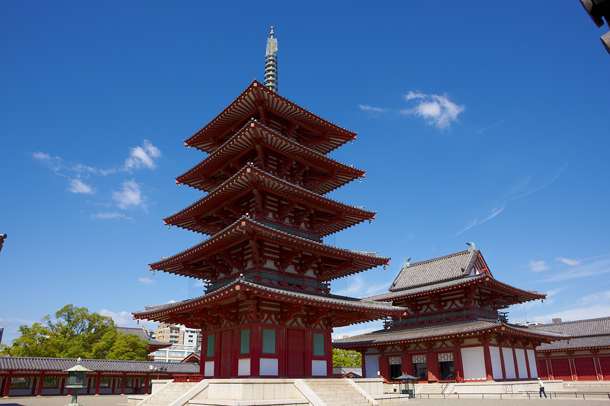
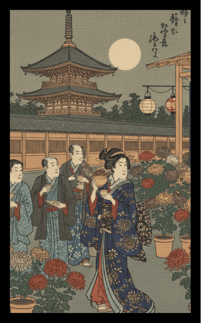
四天王寺の重陽の節句
風景：聖徳太子建立の四天王寺で行われる、重陽の節句（菊の節句）の法要。
解説：菊を供えて不老長寿を願う伝統行事。大阪の長い歴史を象徴する五重塔を背景に、高貴な菊の花を配置し、厳かな秋の訪れを表現します。
9月
絵札を押すと
詳細が見れるぞ